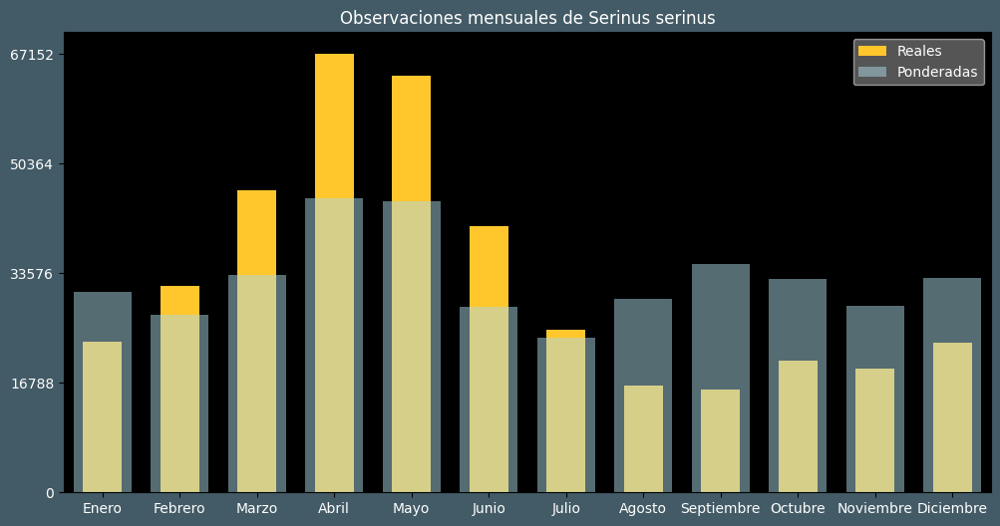

Observaciones por mes
Observations por hora

Categoría IUCN: LC
Género: Serinus
Familia: Fringillidae
Orden: Passeriformes
Descubrimiento: Linnaeus (1766)
| Idioma | Nombre |
|---|---|
| Afrikaans (af) | ? |
| Arabic (ar) | نعار أوروبي |
| Belarusian (be) | Еўрапейскi юрок |
| Bulgarian (bg) | Европейско канарче |
| Catalan (ca) | Gafarró europeu |
| Chinese (zh) | 欧洲丝雀 |
| Chinese traditional (zh-TW) | 金黃絲雀 |
| Croatian (hr) | Žutarica |
| Czech (cs) | Zvonohlík zahradní |
| Danish (da) | Gulirisk |
| Dutch (nl) | Europese kanarie |
| English (en) | European serin |
| Estonian (et) | Koldvint |
| Finnish (fi) | Keltahemppo |
| French (fr) | Serin cini |
| German (de) | Girlitz |
| Greek (el) | (ευρωπαϊκό) σκαρθάκι |
| Hebrew (he) | בזבוז אירופי |
| Hungarian (hu) | Csicsörke |
| Icelandic (is) | Gulfinka |
| Indonesian (id) | ? |
| Italian (it) | Verzellino |
| Japanese (ja) | セリン |
| Korean (ko) | ? |
| Latvian (lv) | Ģirlicis |
| Lithuanian (lt) | Europinis svilikėlis |
| Maceodnian (mk) | Жолтарче |
| Malayalam (ml) | ? |
| North_sami (se) | Fiskesruoivil |
| Norwegian (no) | Gulirisk |
| Persian (fa) | سهره دمگاه زرد |
| Polish (pl) | Kulczyk (zwyczajny) |
| Portuguese (pt) | Milheirinha-europeia |
| Russian (ru) | Канареечный вьюрок |
| Serbian (sr) | Žutarica |
| Slovak (sk) | Kanárik poľný |
| Spanish (es) | Serín verdecillo |
| Swedish (sv) | Gulhämpling |
| Thai (th) | ? |
| Turkish (tr) | Küçük i̇skete |
| Ukrainian (uk) | Щедрик європейський |